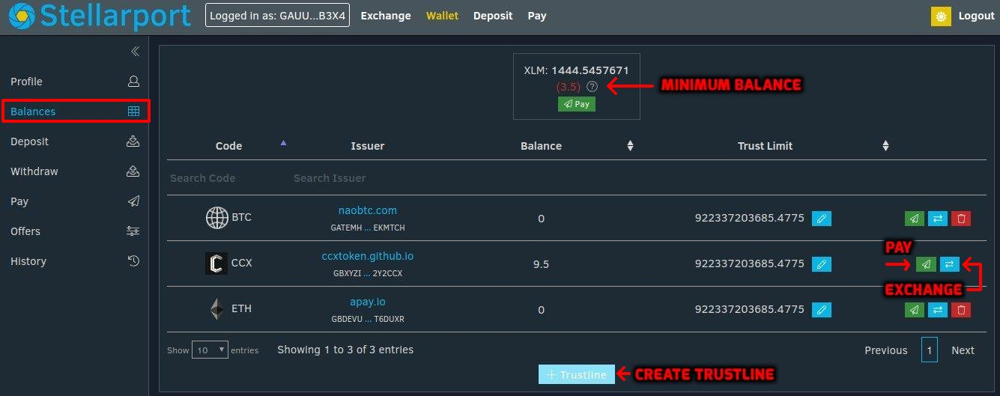
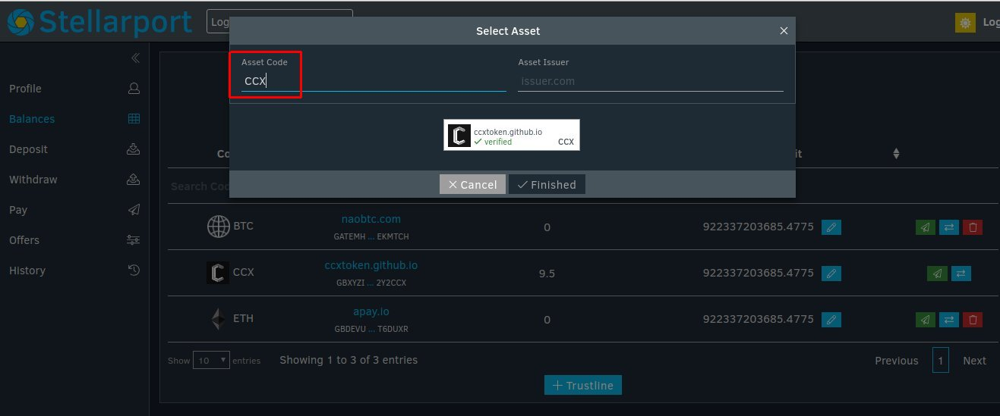
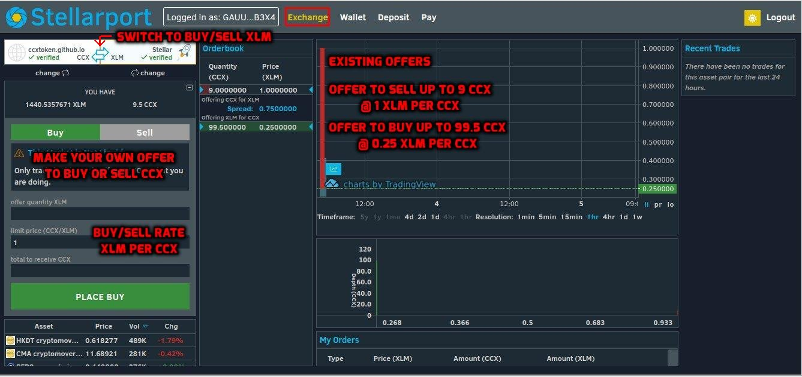

Balances screen

The minimum balance is = (2 + 3 trustlines + 2 offers) * 0.5 = 3.5 XLM.
Trustline screen

Each trustline adds 0.5 XLM to the minimum balance.
CCX token <=> XLM exchange

If your offer overlaps an existing offer, a trade occurs.
A conventional currency rate of 1 CCX/XLM is read as 1 XLM per CCX